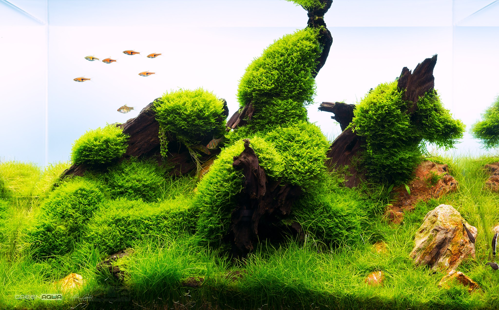

'If there is magic on this planet, it is contained in water.'
-Loren Eiseley
Immersing yourself in nature can have extraordinary effects on an individuals mental health and wellbeing. While houseplants are a common occurrence, building an underwater garden is a much more unique and visually appealing option. An ordinary fish tank looks quite sad and boring after seeing the lush landscapes aquascapers are able to cultivate. The best part in any planted tanks is, well, the plants!
TYPES OF PLANTS
CARPETING
LEAFED
MOSS
Carpeting plants are best for simulating vast open fields and providing grazing grounds for shrimp. Usually used in the foreground, most carpeting plants require some amount of Co2 supplementation to attain the look found in popular showroom tanks, making carpeting plants the hardest to grow out of anything listed.
The Iwagumi style of aquascaping was invented and popularised by Takashi Amano. The term “Iwagumi” comes from the Japanese “rock formation”, which does a fairly good job of explaining the style. Large stones are the central focus in a scape of this style, usually complemented by one or two plants, trimmed short to mimic grass. Rocks are almost always used in an odd number, to make the scape look more natural. The plants shouldn’t overcome the rocks, and should leave plenty of open space.
Mosses are a great addition to any beginner aquarium as they are quite hardy, and don’t require any specific soil or placement. Most mosses will be content to grow on wood, rocks, or soil, and they don’t have any strict lighting requirements. While not the fastest growing plant in the hobby, this means mosses require less trimming than other plants They also improve your aquarium’s water quality by absorbing nitrates, which can be harmful to fish and other livestock.
PLANT CARE
LIGHT
NUTRIENTS
CARBON DIOXIDE
Plants grow and obtain nutrients through the process of photosynthesis which utilizes light as the main source of energy. In order to grow properly, aquatic plants need full-spectrum lighting which mimics natural daylight.
aquatic plants need certain nutrients in order to thrive. The most important nutrients are nitrogen, phosphorus, and potassium but certain trace elements are also required. Substrates and nutrient supplementation can provide these for your plants.
Through the process of photosynthesis, live plants convert carbon dioxide into oxygen. In the streams aquarium plants call home in the wild, Co2 is naturally diffused through surface movement. Co2 supplementation is needed for most aquatic plants.